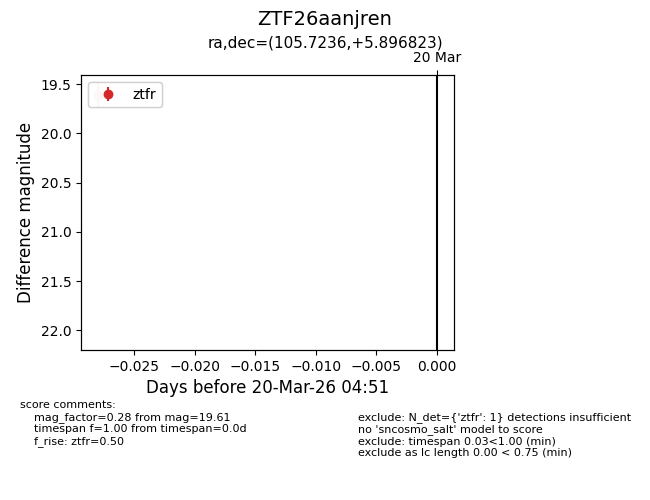
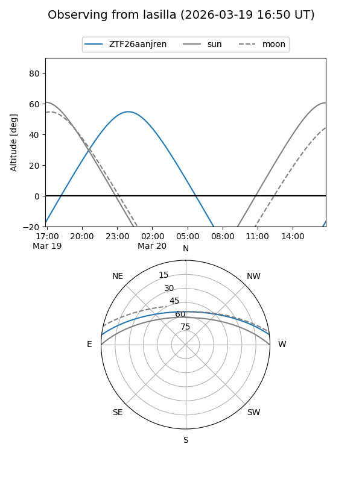
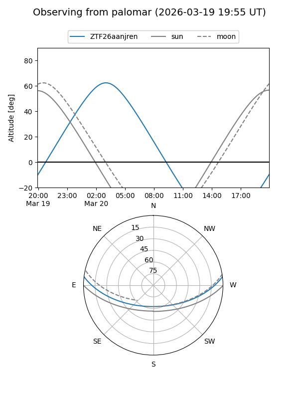

ZTF26aanjren
Target ZTF26aanjren at 2026-03-20 04:53
Aliases and brokers:
FINK: link
Lasair: link
ALeRCE: link
alt names
ZTF26aanjren (ztf,fink_ztf)
Coordinates:
equatorial (ra, dec) = 105.7236,+5.89682
equatorial (HMS+DMS) = 07:02:53.67,+05:53:48.56
galactic (l, b) = (208.9720,+5.22587)
Flags:
Photometry:
last ztfr=19.61
1 ztfr detections
Lightcurve

Visibility


Additional plots